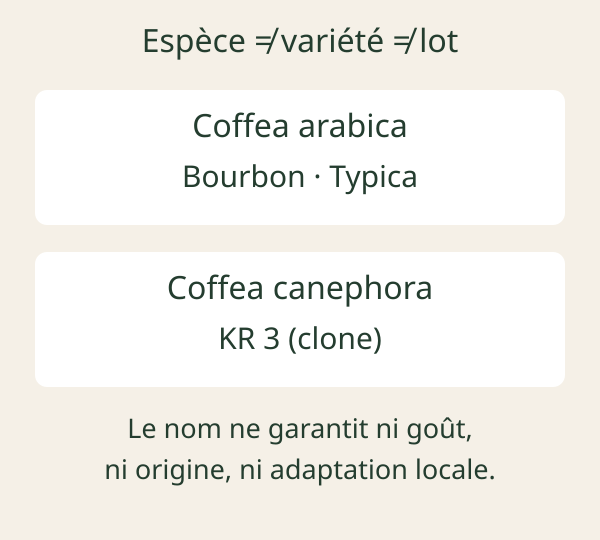

Variétés et clones : premières fiches
Trois fiches sourcées, un schéma et des limites explicites. Aucun cultivar n’est déclaré présent au Bénin sans preuve.

Lire ces fiches et leurs limites
Les informations d'un catalogue décrivent des caractères observés dans certains contextes. Le sol, le climat, l'altitude et les pratiques de culture peuvent modifier les performances. Une indication de potentiel n'est donc pas une promesse de rendement ou de qualité pour une parcelle donnée.
Aucune des informations présentées ici n'établit que Bourbon, Typica ou KR 3 est actuellement cultivé au Bénin, disponible localement ou adapté à une parcelle béninoise. Ces points demandent des références locales et un conseil agronomique lié au terrain.
Sources : World Coffee Research, utilisation et limites du catalogue · World Coffee Research, NARO-Kituza Robusta 3 · World Coffee Research, Bourbon · World Coffee Research, Typica · consultées le 22 novembre 2026.
Bourbon · Arabica
Variété historique de grande taille, importante dans l’histoire génétique du café cultivé. WCR décrit sa sensibilité aux principales maladies et son potentiel de qualité à haute altitude.
Limites : Le nom ne suffit pas à authentifier un plant ni à garantir la qualité d’un lot. Ne pas assimiler toutes les variétés apparentées au Bourbon à cette fiche.
Source : World Coffee Research, Bourbon · consultée le 22 novembre 2026.
Typica · Arabica
Variété historique de grande taille, à faible rendement et sensible aux principales maladies. WCR retrace sa diffusion depuis le Yémen, puis l’Inde et Java vers les Amériques.
Limites : Une histoire de diffusion n’est pas la preuve d’une présence actuelle au Bénin. Un nom commercial doit être distingué d’une identification génétique.
Source : World Coffee Research, Typica · consultée le 22 novembre 2026.
KR 3 · Canephora / robusta
La fiche World Coffee Research nomme KR 3 « NARO-Kituza Robusta 3 ». Elle présente ce matériel comme un clone sélectionné en Ouganda et signale sa résistance au flétrissement du caféier. Cette résistance ne doit pas être comprise comme une protection contre toutes les maladies.
World Coffee Research précise aussi que ce clone doit être associé à d'autres clones pour permettre la fructification. Une fiche variétale n'est donc pas, à elle seule, un plan de plantation.
Limites : La sélection dans un contexte ougandais ne constitue pas une recommandation de plantation au Bénin. Climat, matériel disponible et conseil agronomique local doivent être étudiés.
Source : World Coffee Research, KR 3 · consultée le 22 novembre 2026.
Avant de choisir un matériel végétal
Vérifiez l’identité du matériel, les maladies locales, les conditions de production et les recommandations d’un organisme agronomique compétent. Résistance ne veut pas dire immunité permanente. Ces trois fiches sont une première sélection documentée, pas un catalogue exhaustif.
Révision éditoriale : . Les dates et limites des données restent celles indiquées dans leurs sources.